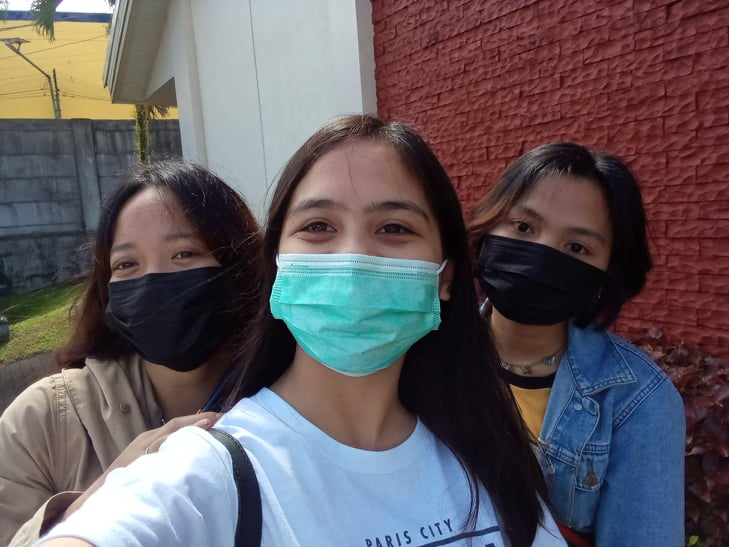
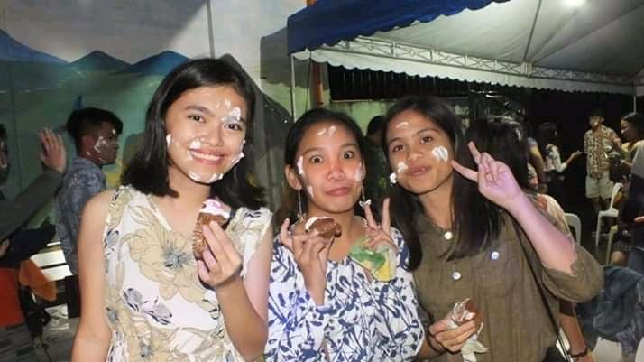
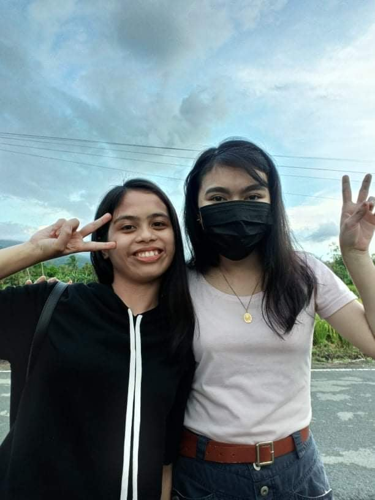
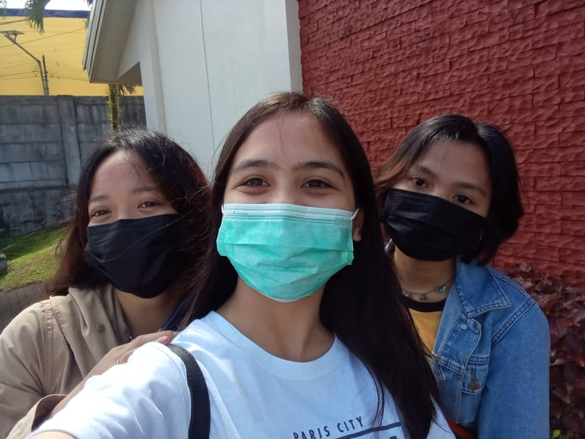
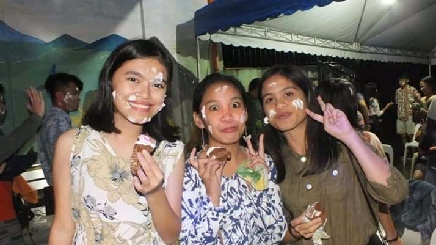
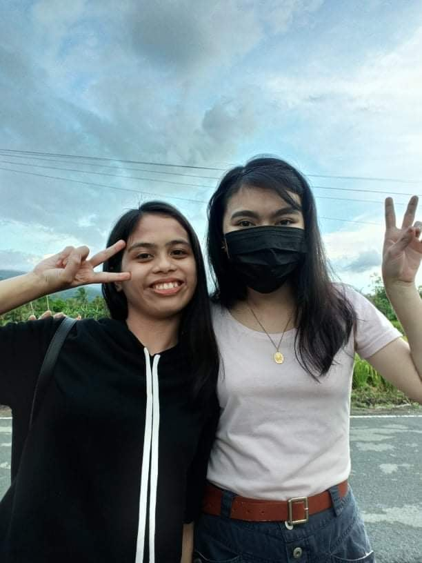
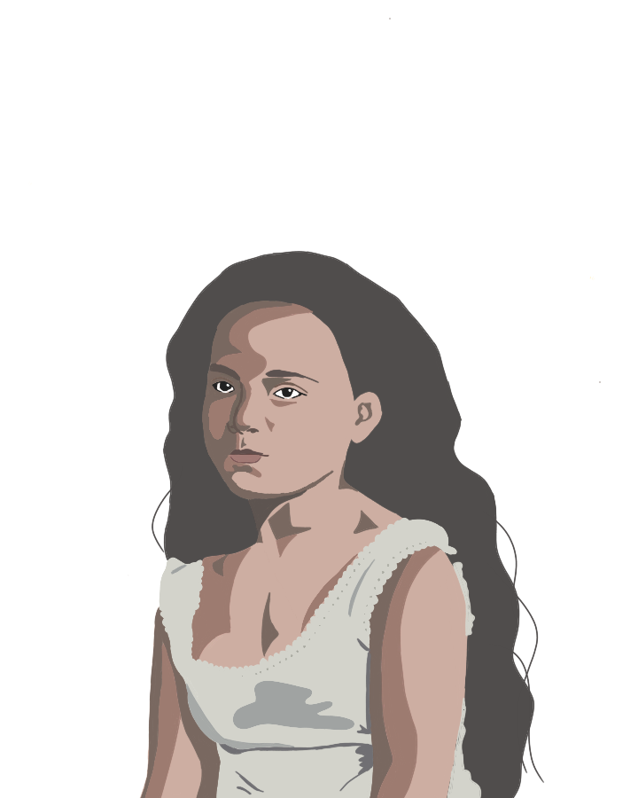
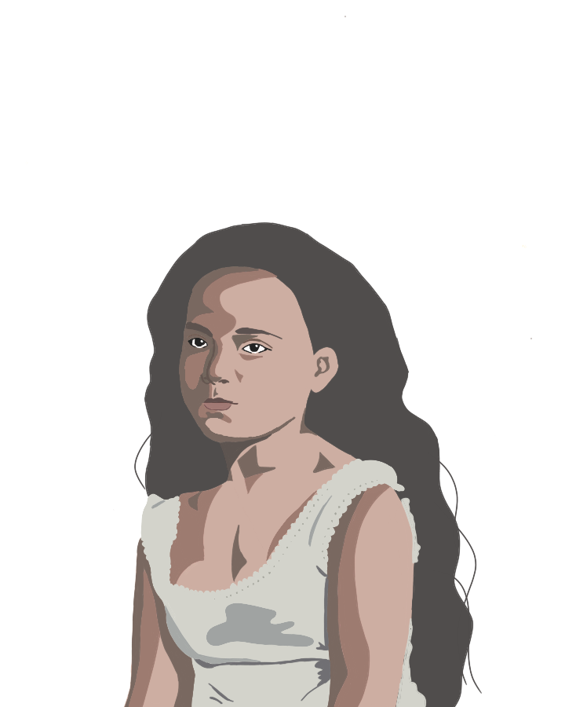

Welcome to my Personal Website!
ANGELA KAYE A. GALERO
About Me

My name is Angela Kaye A. Galero, and I was born on May 25, 2002, at home. I was named by a midwife who assisted my mother in giving birth to me and my twin. Yes, I have a twin sister, but she died soon after she was born in my mother's womb. My family and I were now residing in Rizal, Laguna. My father baptized me and my two brothers in a Christian church, The Church of Jesus Christ of Latter-Day Saints, in 2012. Years later, my mother became a member of our church as well.
In terms of my personality, I was an introvert who seemed to be naturally quiet and shy. However, once someone got to know me well, I became really loud. As I experienced being a leader most often in college, my communication skill improved a little. However, I still have a fear of confronting and interacting with large groups of people. I often experience anxiety attacks, but I was doing everything I can to overcome this concern.
Educational Background
| Year Level | School | Year Graduated |
|---|---|---|
| Elementary | Rizal Elementary School | 2014 |
| High School | Cristobal S. Conducto Memorial Integrated National High School | 2018 |
| Senior High School | Cristobal S. Conducto Memorial Integrated National High School | 2020 |
| College | Laguna State Polytechnic University - San Pablo City Campus | Undergraduate |
I began attending school at the Antipolo Day Care Center when I was four years old and became a kindergartner when I was five. In 2008, I went to Rizal Elementary School from first grade through sixth grade. I attended Cristobal S. Conducto Memorial Integrated National High School till the end of senior high school in 2012. Virtually, I graduated on July 31, 2020. I am currently studying at Laguna State Polytechnic University-San Pablo City Campus under the course Bachelor of Science in Information Technology.
Gallery
My Family
Our family consists of five members. I am the middle child and the only girl in my family. My father's name was Carlos C. Galero, and my mother's name was Kathrina A. Galero. I have two brothers. Jan Lloyd A. Galero, my younger brother, is still in high school, and the other is John Carlos C. Galero. We enjoy spending time together, usually by the lakeside.
My Friends


 





I've been in this circle of friends for almost 9 years. Our camaraderie was genuine, and I felt completely at ease with them. We have a lot in common and like spending time together.
On the other hand, here is the group of friends I made in college. It's so fun to hang out with them.
Hobbies & Interests

Most of the time, I prefer watching anime movies over anime series. Slice of life, adventure, fantasy, and drama are among my favorite genres. I love watching Ghibli films, particularly Hayao Miyazaki's Spirited Away.
Spirited Away Image Source: https://m.media-amazon.com/images/I/412B0Cvv2GL._AC_.jpg


 

During high school, I learned how to do calligraphy and I was able to acquire this skill. I use it in making journals and projects. Also, I discovered my acting abilities in high school. Meanwhile, I became interested in vector arts throughout the pandemic. I was inspired by some artists on Facebook and Tiktok. However, I am not really good at it and I would like to improve. In terms of design making, I prefer being a minimalist. I am not really a talented person. But there are other things I'd like to learn, such as painting, crocheting, and piano.
Regarding music, my preference is towards folk music. Usually, I enjoy listening to song covers of Renee Dominque and tracks from TWICE, my favorite K-pop girl group. However, what I truly cherish is listening to youth songs from our church.